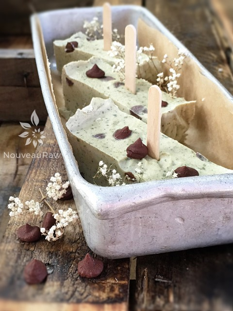

Chocolate Chip Mint Ice Cream

~ raw, vegan, gluten-free ~
Chocolate Chip Mint Ice Cream was one of my all-time favorite ice creams growing up. Along with vanilla, chocolate, Chunky Monkey, orange sherbet, strawberry, coffee… ok, so I had many favorites. hehe
Anytime my Bob hears the ice cream machine running, he always pokes his nose and finger into the machine to snag a taste test. He insisted on a bowl once it was done.
So, I dished some up and served it to him with a smile. His response was, “I think this is my new favorite!” I have to laugh because he says that to every different raw ice cream I make. I am not complaining by any means, as long he keeps loving them, I know that I am on the right track!
This is totally optional, but you can add some spirulina to the batter to bump up the green color. But that’s not all that it adds. Spirulina has many incredible health benefits. It’s not a herb; it’s actually a bacteria or blue-green algae that are found in pristine freshwater lakes, ponds, and rivers. Sometimes I add, and sometimes I don’t. In the photo above, I decided not to and just leave some green flecks from the fresh mints to pop through.
It’s an immune booster, inflammation reducer, and my all-time favorite topic… Spirulina it great for the digestive system. It eases the passage of waste through the digestive system, thereby reducing stress on the entire system. It also promotes healthy bacteria in the digestive system and helps to improve the absorption of dietary nutrients. (source).
I hope you enjoy this recipe. Please comment below. Blessings, amie sue
yields 4 cups batter
- 2 cups raw almond milk
- 2 cups young Thai coconut meat or soaked cashews
- 1/3 cup maple syrup
- 2 Tbsp raw honey or raw coconut nectar
- 2 tsp vanilla extract
- 2 Tbsp raw cold-pressed coconut oil
- 1/4 tsp Himalayan sea salt
- 1/2 – 1 cup chocolate chips
- 1 cup fresh mint leaves, de-stemmed
Preparation:
- In a high-speed blender, combine the almond milk, coconut, sweeteners, vanilla, coconut oil, salt, and mint leaves. Blend until nice and creamy.
- If you want more of a green color, you can add a dash of spirulina at a time till you reach the desired color. Just be careful to not add too much because you don’t want to alter the flavor.
- Due to the volume and the creamy texture that we are going after, it is important to use a high-powered blender. It could be too taxing on a lower-end model.
- Blend until the filling is creamy smooth. You shouldn’t detect any grit. If you do, keep blending.
- This process can take 2-4 minutes, depending on the strength of the blender. Keep your hand cupped around the base of the blender carafe to feel for warmth. If the batter is getting too warm. Stop the machine and let it cool. Then proceed once cooled.
- If you don’t have access to fresh young Thia coconuts, you can use 1 1/2 cups of raw cashews that have been soaked for at least 2 hours in its place.
- Place the blender carafe in the fridge or freezer for 1 hour.
- If chilled in the fridge it can stay there for up to 8 hours. But don’t leave in the freezer for more than an hour or it will freeze solid.
- The purpose of chilling the batter before it goes into the ice cream machine is basically to prime it… it will speed up the process.
- Once chilled pour the batter into the ice cream maker and follow the manufacturer’s instructions.
- Add the chocolate chips when the ice cream machine is about to stop.
- It is best to take the ice cream out of the freezer for about 10 minutes ahead of time, so it can have a chance to soften.
- Eat within 1 month.
Freezing Suggestions for Ice Cream:
-
Use an ice cream machine. Follow the manufactures directions.
-
Freeze in popsicle molds or 3 oz Dixie cups with a popsicle stick inserted.
-
-
Store the ice cream in the very back of the freezer, as far away from the door as possible. Every time you open your freezer door you let in warm air. Keeping ice cream way in the back and storing it beneath other frozen-sold items will help protect it from those steamy incursions.
-
Ice cream is full of fat, and even when frozen, fat has a way of soaking up flavors from the air around it—including those in your freezer. To keep your ice cream from taking on the odors, use a container with a tight-fitting lid. For extra security, place a layer of plastic wrap between your ice cream and the lid.
-
To soften in the refrigerator, transfer ice cream from the freezer to the refrigerator 20-30 minutes before using. Or let it stand at room temperature for 10-15 minutes.
-
Wish to make your own raw ice cream, wonder what machine I might recommend, and more? Click (
here) to check out the Reference Library!

© AmieSue.com